GPU instances · Token Factory · API
Radeon Cloud Docs
Radeon Cloud 文档
English · 简体中文
amd-aim.github.io/radeon-cloud-docs

GPU instances · Token Factory · API
Radeon Cloud 文档
amd-aim.github.io/radeon-cloud-docs